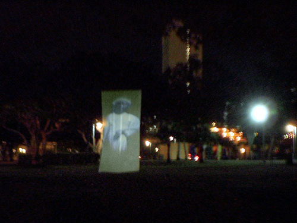

1000 DAYS OF THEORY
A Aura do Digital
Michael Betancourt
Portuguese translation by FILE: Electronic Language International Festival

Michael Betancourt. Spook: The Ghost of Slavery Past, 2003.
Prefácio
Ao dividir a interpretação de uma obra de arte em vários "níveis" diferentes, torna-se possível reconhecer uma
distinção fundamental entre obras de arte digitais e não-digitais, assim como perceber que a ideologia subjacente se baseia na
ilusão de recursos infinitos; como tal, ela replica a ideologia subjacente ao próprio capitalismo -- a de que existe uma quantidade
infinita de riqueza que pode ser extraída de um recurso finito. Essa ilusão emerge em fantasias de que a tecnologia digital põe
fim à escassez ao aspirar à condição de informação. O digital apresenta a ilusão de um campo
autoprodutivo, infinito, capaz de criar valor sem gastos, diferentemente da realidade de recursos, tempo, gastos etc. limitados que governa todas as
formas de valor e produção.
As formas digitais também demonstram o que se poderia chamar de "aura da informação" -- a separação entre o
significado presente em uma obra e a representação física dessa obra. Como as obras digitais com a "aura da
informação" implicam uma transformação de objetos em informação, entender a estrutura específica da
arte digital torna muito mais explícita a forma da "aura digital". Esse esclarecimento permite considerar as diferenças entre a escassez
de produção material no mundo físico real contra a escassez de capital na reprodução digital: a necessidade de
controle da propriedade intelectual na virtualidade da reprodução digital. Como o capital é um recurso finito sujeito a escassez,
mas também preso ao paradoxo capitalista da escalada de valor -- nas formas duplas de juro e lucro sobre os gastos de capital --, existe a
constante exigência de se criar mais valor de mercadoria para extrair mais riqueza da sociedade e manter o equilíbrio do sistema.
Para compreender essa "aura da informação" é necessário um reconhecimento da natureza do objeto digital: ele é
composto ao mesmo tempo da mídia física, que transmite, armazena e apresenta a obra digital ao público, e a obra digital em si
que na verdade é composta de uma obra gerada por máquina e legível por humanos criada pelo computador a partir de um arquivo
digital (que é armazenado em algum tipo de mídia física). Esse "objeto digital" é a forma real da obra digital -- uma
série de sinais binários gravados por uma máquina e que exigem uma máquina para que esse "código" invisível
seja legível por seres humanos. O "objeto digital" transforma-se nas imagens, filmes, textos, sons, etc. em forma legível por seres
humanos somente através das ações convencionais de uma máquina que interpreta os sinais binários do objeto digital
e segundo o paradigma interpretativo inserido naquela máquina, que transforma esse código binário em formas legíveis por
humanos e superficialmente diferentes. Todos os objetos digitais têm essa forma subjacente singular -- o código binário --, fato
que torna o objeto digital fundamentalmente diferente de qualquer tipo de objeto físico exatamente porque lhe falta a característica
singular de forma que define as diferenças entre pinturas, desenhos, livros, sons ou qualquer outro objeto ou fenômeno físico.
Diferentemente dos objetos físicos, os digitais são todos basicamente iguais, qualquer que seja sua forma aparente depois de
interpretados por uma máquina.
I. Fisicalidade e conhecimento
O ensaio de Walter Benjamin "A obra de arte na era da reprodução mecânica" inicia a discussão crítica da
idéia de que as obras de arte têm uma "aura", e propõe que essa "aura" é destruída pelo processo de
reprodução mecânica. Sua noção de "aura" se expande rapidamente para incluir não somente a arte -- qualquer
coisa que seja reprodutível é englobada nesse conceito. Embora esta descrição do artigo de Benjamin seja altamente
redutora, ela capta sua tese essencial que sugere inerentemente uma perda histórica provocada pela mudança tecnológica. Seguindo
o argumento de Benjamin, é lógico supor que a arte ficaria sem "aura" quando a reprodução mecânica dá lugar
à reprodução digital. Como notou o economista Hans Abbing:
Walter Benjamin previu que a reprodução técnica da arte levaria à ruptura do encantamento da arte
('Entzauberung'). A arte torna-se menos obscura, mais acessível e portanto menos mágica por causa da reprodução
técnica. ... A previsão de Benjamin não é difícil de entender. A (re)produção técnica permite
a produção maciça de obras de arte por baixos preços. Seria de fato muito estranho se isso não reduzisse o apelo
exclusivo e glamouroso dos produtos de arte. ... Mas até agora isso não aconteceu; [o compositor] Bach e sua obra mantêm sua aura.
Em geral, se observarmos o status e a adoração elevados, senão aumentados, da arte desde a primeira publicação do
ensaio de Benjamin, essa previsão ou estava errada ou ainda vai demorar para que suas previsões se realizem."[1]
As observações de Abbing sobre a tese de Benjamin de que a reprodução tecnológica e a disponibilidade
maciça resultam em uma diminuição da "aura" sugerem que em vez de diminuir a "aura" da arte a reprodução ajuda a
ampliar a aura das obras reproduzidas, em vez de destruí-la. Essa interpretação invertida da "aura" produzida pela obra de arte
de fácil acesso e disponibilidade muda a ênfase do artigo de Benjamin do tradicional valor de "culto" dos objetos de arte para o que ele
denomina seu valor "de troca" comercial. Essa ênfase para o que Benjamin supõe seja o papel tradicional das obras de arte em
práticas religiosas aparece em seu conceito de aura como a fisicalidade do objeto, o que ele chama de "autenticidade".
A autenticidade de uma coisa é a essência de tudo o que é transmissível desde seu início, de sua
duração substancial até seu testemunho da história que experimentou.[2]
Como implica a proposição de Abbing, a idéia de "autenticidade" de Benjamin só se torna um valor significativo quando
há reproduções de uma obra de arte, semelhantes na aparência, mas não idênticas à sua fonte. Portanto,
quanto mais divulgada uma obra de arte através da reprodução, pode-se supor que sua "aura" logicamente também aumentaria.
O que Abbing sugere é que a "aura" não é o que Benjamin propôs, e sim uma função do próprio processo
reprodutivo. Essa mudança de concepção da "aura" de Benjamin sugere que os objetos de arte têm um caráter duplo. Sua
"aura" é ao mesmo tempo os vestígios físicos da história particular que o objeto experimentou e a relação
desse objeto com a tradição que o produziu. São dois valores distintos: um reside no objeto físico, o outro no
conhecimento (e experiência anterior) do espectador sobre a relação do objeto com outros objetos semelhantes. Se o primeiro valor
é um "testemunho histórico", o segundo pode ser chamado de "relação simbólica". Embora a relação com
a tradição seja um valor independente, separado das propriedades físicas que formam o "testemunho histórico", não
pode ser reduzida a um conjunto de características fisicamente presentes. Separar esses dois valores resulta num novo conceito de "aura",
independente das proposições iniciais de Benjamin, que é especificamente aplicável à tecnologia digital: a
idéia de "aura" resulta da função que a obra exerce sociologicamente para seu público (como ele emprega a obra em sua
sociedade). Esse conceito, relacionado ao acesso do público àquela obra de arte, torna os conflitos sobre "propriedade intelectual" uma
conseqüência inevitável da emergência da tecnologia digital.
Mecânica ou manualmente, os objetos (re)produzidos sempre têm um limite implícito de disponibilidade (portanto, sua
acessibilidade); os objetos digitais não têm um limite desse tipo -- em princípio, um número infinito de qualquer obra
digital pode ser produzido sem alteração ou perda, ou mesmo desvio entre qualquer das obras. Essa distinção entre todos os
objetos físicos e os objetos digitais revela uma semelhança fundamental entre a obra de arte original e suas reproduções
mecânicas; essa semelhança configura as antigas relações de cópia e original: ela revela sobretudo a
diferença básica entre o digital e o físico. Toda reprodução digital é idêntica a todas as outras; os
objetos digitais são armazenados como uma forma de informação, e não limitados como são inerentemente os objetos
físicos; portanto, o estado digital pode ser entendido como uma forma de linguagem instrumental -- instruções para executar a
"recuperação" de uma determinada obra (de arte) digital.
Entre os objetos físicos, cada objeto é na verdade único, mesmo quando é um exemplo idêntico de um determinado
tipo: enquanto duas folhas de papel em branco podem ser aparentemente idênticas em todos os aspectos, cada folha é um exemplo
único, fisicamente independente de todos os outros. As reproduções digitais são todas iguais, e não exemplos
únicos de um determinado tipo (como folhas de papel em branco); cada uma é uma execução idêntica de
instruções uniformes e constantes, uma "cópia". A teoria da informação descreve obras desse tipo como exibindo
entropia informacional-teórica zero: como a execução dos dados instrumentais dos objetos digitais (o arquivo
eletrônico armazenado num computador) é um processo totalmente previsível, no âmbito de um dado sistema digital,
não há necessidade de informação para produzir uma obra digital a partir de um objeto digital (arquivo eletrônico).
[3] A reprodução digital é portanto fundamentalmente diferente de qualquer tipo de
reprodução anterior, e os objetos digitais submetidos a esse tipo de reprodução podem ser considerados uma nova classe de
objetos.
As obras (de arte) digitais retêm sua forma inicial ao longo do tempo, sem degradação, porque não há um objeto
físico sujeito à decomposição do tempo. Elas podem ser editadas, compiladas, combinadas e distribuídas sem qualquer
modificação em qualquer reprodução subseqüente; as "cópias" podem ser reproduzidas infinitamente, sem ser
submetidas à perda inerente à mídia física. Uma "cópia" é não apenas equivalente em conteúdo,
como é idêntica à sua fonte. O conceito de "original" digital desaparece porque todas as versões são "originais"
idênticos, ou são todas "cópias" idênticas.
A linguagem contemporânea carece dos termos necessários para descrever a relação entre instâncias diferentes de um
objeto digital idêntico: "cópia" supõe o modo tradicional de originais e réplicas; "clone" introduz uma analogia
biológica que não obstante sugere uma fonte original anterior que (pelo menos) potencialmente existe como origem. Como os dados que
constituem a obra digital em si permanecem constantes, os objetos digitais são indistinguíveis; a distinção entre
quaisquer duas iterações de uma obra digital singular não é uma questão de conteúdo ou forma, porque a
informação digitalizada permanece constante; é uma questão de localização e apresentação
física -- onde uma versão específica se situa na mídia física que carrega sua impressão e/ou a exibe de uma
forma legível pelos humanos.
II. Objetos físicos X digitais
A distinção entre objetos físicos e objetos digitais é absoluta. Essas distinções se referem a uma
dualidade entre o significado simbólico e a fisicalidade que começa com as primeiras formas de reprodução em massa: a
cunhagem de moedas. A impressão de emblemas nas moedas torna cada uma valiosa por meios duais: através de seu material (metais
preciosos), e simbolicamente identificada como autêntica (que seu valor é real) pelas marcas brasonadas em sua superfície
(conteúdo simbólico). A autenticidade é uma conclusão baseada numa segunda ordem de interpretação, derivada
de uma decisão sobre o conteúdo simbólico de um objeto. O objeto digital, por não ter um componente físico, existe
como conteúdo simbólico que se torna uma forma fisicamente acessível somente quando apresentado através de um
intermediário tecnológico (por exemplo, um monitor de vídeo ou de computador) ou transformado em objeto físico (como uma
impressão em papel).
As valências separadas de material e símbolo podem ser entendidas como existentes em níveis diferentes de
interpretação: a física fornece o primeiro nível, com todas as conclusões sobre a idade do objeto, etc., formando
uma primeira ordem; o conteúdo simbólico, incluindo suas ligações a tradições, semelhança ou
diferença de outros objetos, a relação do intérprete com o objeto particular, etc., formam todos uma segunda ordem de
interpretação. Enquanto a segunda ordem, simbólica, necessita da primeira ordem (algum tipo de presença física)
para sua apresentação, o conteúdo interpretado existe como um excedente da primeira ordem. É a informação
fornecida e criada pelo intérprete usando a experiência anterior de interpretar a forma e o caráter da primeira ordem que produz a
segunda ordem.
O dualismo da "aura" dos objetos físicos aparece como uma função tanto do objeto material quanto de seu conteúdo
simbólico. Não é casual que o dualismo da "aura" esteja ligado à invenção do valor de troca (moeda). O valor
de troca depende da agência humana de maneiras sociais e políticas para alcançar seu significado e manter seu valor. É
exatamente na definição do valor por meio de um esquema particular de muitos objetos diferentes governados pela agência humana que
surge o "valor". A consciência da relação simbólica entre um objeto e outro é um resultado interpretado da
agência humana, e não inerente ao objeto em si. A aura das obras digitais retém essa dualidade enquanto dispensa a
restrição literal da fisicalidade específica. O encontro com um objeto digital ainda é um engajamento material, mas no
qual o material é separado da obra digital, servindo como apresentação da obra -- por exemplo, o que é visto e ouvido
quando se assiste a um videoclipe num computador.
A separação entre a apresentação específica de uma obra digital de nosso conceito daquela obra literalmente
inscreve o desejo modernista de isolar a obra de arte do contexto que a produz em nossa consciência e interpretação da obra
digital: em vez de exigir o espaço branco e asséptico da galeria para eliminar o contexto externo das interpretações da
arte, com as obras digitais essa eliminação das especificidades de localização, apresentação, contexto, etc.
acontece na mente do espectador. Esse efeito decorra da "aura de informação" a que aspiram as obras digitais.
Como os aspectos materiais das obras digitais são efêmeros, durando não mais que o encontro fenomenológico com a
apresentação do objeto digital (geralmente em algum tipo de tela), a "aura da informação" sugere que o próprio
digital transcende a forma física. Essa ilusão define a "aura da informação". Como as obras digitais emergem de uma
interpretação de segunda ordem, elas pertencem à mesma categoria de objetos que a música codificada para ser reproduzida
por uma máquina, como uma pianola. Os objetos digitais não estão prontos para leitura humana, e só se tornam
sensíveis como obras quando processados por uma máquina. Como a música codificada no rolo perfurado da pianola, o objeto digital
é separado de sua incorporação física, muitas vezes reproduzida de maneiras e com tecnologias (como a linguagem)
independentes das formas digitais, mas são facilmente reprodutíveis sem perda e totalmente dependentes de tecnologias específicas
para seu desempenho ou apresentação (como as obras digitais).
Como os objetos digitais não se degradam com o tempo, eles não desaparecerão. O limite de uma obra digital não se
baseia em sua decomposição física, mas sobretudo em sua disponibilidade dentro da tecnologia contemporânea. Obras digitais
mais antigas só se "perdem" porque o suporte tecnológico para acessá-las desaparece; teoricamente, a obra digital perdura e pode
ser recuperada no futuro. A reprodução digital torna-se então não apenas uma característica inerente aos objetos
digitais, como também seu meio para a efetiva imortalidade. A reprodução digital de arquivos de tecnologias mais antigas para
novas tecnologias permite a continuidade (manutenção perpétua) das obras digitais, independentemente da tecnologia em que elas
começaram; os antigos programas de computador, como jogos arcade de 8 bits que existiam originalmente como chips ROM, por exemplo, os cartuchos
de jogos Atari 2600 Home Entertainment System, ainda são acessíveis porque a tecnologia contemporânea é capaz de
emular os sistemas obsoletos e descartados, assim permitindo que as obras digitais sejam lidas com equipamentos vastamente mais poderosos e
incompatíveis com arquivos digitais mais antigos. No caso do sistema de jogos de computador Atari 2600 existe um grande, embora
limitado, número de Atari Home Entertainment Systems em funcionamento, e quando o último sistema quebrar de modo
irreparável o acesso às versões originais dos arquivos nos cartuchos ROM por seu sistema de hardware original se perderá.
Essa perda constitui o testemunho histórico dessa tecnologia e das obras digitais acessíveis a ela. No entanto, o testemunho
histórico desses sistemas é totalmente separado dos arquivos contidos nesses ROMs, e a sobrevivência dos dados neles contidos
é de natureza diferente da sobrevivência do próprio sistema físico original. (Essa leitura é resultado de sistemas
mais novos que emulam o funcionamento de sistemas digitais antigos.)
A capacidade de separar o arquivo digital do hardware dramatiza a aura dos objetos digitais: a obra digital como imortal, passageira,
adaptável a qualquer nova tecnologia de apresentação que surja. Ela também conecta a aura dos objetos digitais à
aura da informação, já que a informação é uma função de interpretação e
teoricamente também pode ser transferida de um sistema de reprodução para outro, assim como línguas antigas e "mortas"
como o grego antigo ou os hieróglifos egípcios podem ser traduzidos em línguas contemporâneas como o inglês.
Teoricamente, o conteúdo da língua antiga permanece constante; com os objetos digitais esse aspecto teórico da linguagem e do
significado humanos torna-se fato, por causa da distinção entre a linguagem de código binário da máquina que
é prescritiva e a linguagem humana que é descritiva e denotativa. Como a linguagem binária da máquina é um conjunto
de comandos, a transferência e conservação da informação contida naquela linguagem não se sujeita ao
"deslocamento" semiótico do significado que afeta toda linguagem humana. Assim, o conteúdo de sistemas digitais "mortos" pode ser
recuperado, garantindo a imortalidade de qualquer objeto digital.
No entanto, a imortalidade dos arquivos digitais também leva a um acúmulo de obras cujo gerenciamento e acessibilidade
inevitavelmente começarão a se tornar um problema, além da simples questão da capacidade de acessar arquivos antiquados
construídos e utilizados com hardware que se tornou obsoleto e insubstituível.
Quando a imortalidade das obras digitais é entendida no sentido de que essas obras se acumularão e serão imanentemente
presentes no futuro indefinido, surge um problema malthusiano. Conforme os materiais se acumulam em forma digital eles se tornam cada vez mais
difíceis de organizar, acessar e usar. A "aura da informação" implica que esse contínuo acúmulo de
informação é um valor positivo em si, separando a informação da capacidade de usá-la ou determinar seu
valor. A "aura da informação" ganha seu aparente valor das sociedades pré-digitais onde o acesso a e a posse de
informação era um valor positivo porque o volume de informação, mesmo potencialmente disponível, era limitado
fisicamente a objetos específicos e pela capacidade de reproduzir essa informação. Em tal sociedade, a informação
estocada tem valor em si porque a quantidade de informação permanece limitada. Para as tecnologias digitais, a criação,
armazenamento e distribuição de informação não são limitados como para as sociedades tradicionais. Porque a
informação digital aspira à imortalidade, é infinitamente reprodutível e reivindica a "aura da
informação" -- a problemática do acúmulo e gerenciamento de arquivos digitais necessariamente emerge como um resultado
inevitável do desenvolvimento da tecnologia digital.
III. Testemunho histórico
Todas as reproduções mecânicas são objetos em si; como tal, carregam seu próprio "testemunho histórico" e
estão sujeitas aos efeitos do tempo e da decomposição como qualquer outro objeto. Isto vale para a reprodução
mecânica em todos os níveis de sua existência; o negativo fotográfico está sujeito à
decomposição e perda, assim como a placa metálica usada na imprensa gradualmente se desgasta com o uso para fazer
reproduções. A reprodução mecânica pode portanto ser considerada como tendo o mesmo potencial de autenticidade (via
testemunho histórico) que qualquer outra obra de arte física.
Em contraste com a reprodução mecânica, a reprodução digital é um objeto polivalente. A
reprodução física do objeto digital, como por exemplo numa tela de computador, não submete aquele arquivo ao desgaste que
os objetos físicos sofrem; tampouco a cópia, envio ou armazenamento desses objetos digitais necessariamente os danificam. A
transferência digital de arquivos produz cópias idênticas e perfeitas, não submetidas ao testemunho histórico dos
objetos físicos. De fato, o objeto digital -- a informação contida no/como arquivo digital é independente de testemunho
histórico. No entanto, o meio que armazena o arquivo digital está sujeito ao "testemunho histórico". Esse recipiente é
diferente de seu conteúdo, e deve ser entendido como separado dele.
Os tipos de "testemunho histórico" que impactam os arquivos digitais podem, portanto, ser divididos em três tipos: (1) os que impactam
o recipiente, seja o disco, CD, ROM ou outro meio de armazenamento; (2) os que afetam o arquivo digital em si, diferentemente do meio de
armazenamento; e (3) a acessibilidade do arquivo que usa tecnologia contemporânea (a questão da obsolescência do software, hardware
e dos arquivos produzidos com tecnologia mais antiga). Um CD quebrado pode tornar inacessíveis os dados que ele contém, mas não
destrói realmente os dados. Um arquivo de computador danificado ou corrompido é conseqüência de erros feitos pelo sistema ao
armazenar ou exibir o arquivo, e não são exemplos de testemunho histórico, mas são mais semelhantes a erros de
impressão ou outros feitos com o maquinário de reprodução mecânica.
A acessibilidade de um objeto digital produzido com tecnologia obsoleta não deixa vestígios no objeto em si; é a capacidade de
ler o conteúdo do arquivo que se atenua com o tempo, não o arquivo em si. Seu conteúdo permanece constante, mesmo quando
não podemos mais acessá-lo. Essa situação se compara a nossa capacidade de ler linguagens humanas antigas ou "mortas"
escritas em hieróglifos ou caracteres cuneiformes: o conteúdo dos textos independe de seu meio de armazenamento ou do formato
(língua) em que foram escritos.
Essas falhas não constituem um testemunho histórico para os objetos digitais; pelo contrário, demonstram a natureza da obra
digital como interpretações de segunda ordem apresentadas à visão. Isto explica sua falta de presença física
e a relação desconfortável entre o "modelo" ou original digital, o arquivo digital e as versões físicas produzidas
a partir dele, como impressões, exibição em monitores, etc. O conflito que cerca os direitos de propriedade intelectual refere-se
mais ao acesso ao "objeto" de arte em si, pois no reino digital o potencial de reproduzir e distribuir não inclui necessariamente o direito de
ler (acessar) a obra -- é por isso que toda proposta de gerenciamento de direitos digitais (DRM - "digital rights management") limita e
controla o acesso à obra de arte digital: o direito a ler.[4]
IV. A independência da apresentação digital
Interpretações de primeira ordem de obras de arte históricas como a Capela Sistina baseiam-se no fato de que ela
continua sendo a Capela Sistina em todas as circunstâncias; no entanto, essa suposição revela seu caráter atenuado
com a reprodução mecânica, e se manifesta claramente com as obras digitais (se não for completamente invalidada pela enorme
variedade de exibições da mesma obra por meio de diversos projetores, monitores, diferentes parâmetros de usuários em
diversos computadores, etc.), a tal ponto que se torna menos adequado pensar nas obras digitais em termos das especificidades de uma
determinada forma de exibição do que pensar sobre elas independentemente de sua exibição.
Considere, por exemplo, a questão da cor. Monitores de computador diferentes exibem a cor diferentemente, dependendo da idade do monitor,
há quanto tempo ele está sendo usado, a construção particular dos pixels em sua tela, a configuração
específica no momento da exibição, etc. As lojas que vendem monitores têm vitrines com os modelos disponíveis porque
essas diferenças impactam a aparência das obras digitais exibidas. A questão da cor torna-se ainda mais variável quando a
consideração da exibição vai além dos monitores e inclui outros tipos de exibição como
projeção, transmissão de TV e até vídeo em telefones celulares. Cada expansão da possível forma de
exibição aumenta a variação da aparência de um arquivo digital, tornando problemática a questão de
qual versão é a autêntica, já que o arquivo exibido pode permanecer constante.
A aura de informação exige que os espectadores ignorem a apresentação (monitor de vídeo, projetor,
impressão, etc.) ao considerar o "contexto" da obra -- conclusões relacionadas a qual seria a primeira ordem de
interpretações para obras não-digitais: por exemplo, de onde é a pintura, como está iluminada, qual sua idade --
questões que geralmente são eliminadas quando diante de uma projeção digital. Idade, materiais, etc. não são
deduzidos dos materiais físicos da apresentação de uma obra digital, mas de considerações sobre seu conteúdo
simbólico. Na medida em que uma obra digital tem um testemunho histórico, é uma conseqüência de se historicizar o
estilo e a forma da obra (interpretações de segunda ordem). O fato de uma obra digital ser exibida numa tela plana, num tubo de raios
catódicos ou outro, e como projeção em outras ocasiões, não afeta nossas considerações sobre aquela
obra digital. Enquanto as apresentações podem mudar, a obra digital é considerada a mesma sejam quais forem os meios usados para
sua apresentação. Essa negação da variabilidade das apresentações das obras digitais sugere que a obra
digital existe e é entendida como independente de suas diversas apresentações. A mesma negação do arquivo digital
fisicamente armazenado reflete a negação das especificidades das apresentações; ambos são efeitos da aura da
informação, gerando a crença de que os objetos digitais são separados da fisicalidade.
A independência das obras digitais de sua apresentação física está ligada à contingência do direito
de ler um arquivo digital e à base tecnológica da (re)produção digital. Enquanto as reproduções manual e
mecânica sempre preservam o caráter físico do objeto, deixando-o sujeito a seu testemunho histórico particular, as obras
digitais não. Qualquer tipo de material impresso retém sua forma, a menos que seja fisicamente atacado -- enterrar um livro na lama pode
resultar na decomposição do livro, com sua conseqüente perda como tal; uma obra digital não pode ser atacada dessa forma,
mas tampouco pode ser acessada sem um suporte tecnológico. Os arquivos digitais só aparecem em variações sugeridas pela
discussão da cor, acima.
Admitir a falta de testemunho histórico das obras digitais cria uma estrutura que afasta os objetos digitais dos atributos particulares de
objeto físico de sua apresentação para uma arte voltada para o não-objeto. A singularidade das obras digitais não
pode portanto ser conseqüência de haver "apenas uma", nem sua singularidade pode ser resultado de um caráter solitário
(individual), porque todas as "cópias" são idênticas em todos os sentidos. Na verdade, para as obras digitais (assim como para as
obras (re)produzidas mecanicamente antes delas) não há objeto de primeira ordem, na maneira como há uma Capela Sistina.
O impacto da forma particular de "singularidade" da obra digital sobre a propriedade intelectual revela-se como a questão de acesso à
obra: o direito a ler, mais que de possuir uma cópia. A posse e o acesso são separados entre si. Com objetos de primeira ordem, como a
Capela Sistina, a posse também confere o direito de acesso: ter a posse garante o acesso à obra; com as obras digitais, a posse
torna-se atenuada -- é possível "possuir" arquivos num computador, mas não ter a capacidade de acessar o conteúdo desses
arquivos. O modelo que essa propriedade intelectual adota é, portanto, muito mais próximo da idéia de um banco, onde só
pessoas autorizadas podem fazer negócios e todas as outras são descartadas a menos que elas também possam investir dinheiro no
banco. Em todo caso, aquilo a que os clientes têm acesso, as ações que lhes são permitidas, e mais significativamente
quanto custa realizar essas ações é determinado pelo banco. O que esses "clientes" podem fazer é estritamente limitado
pelas particularidades de seu investimento específico no banco.
V. A materialidade das obras digitais
A reprodução mecânica é sempre limitada pelos materiais físicos, tanto na forma da tecnologia (re)produtiva
(imprensa, negativo fotográfico, etc.) quanto nos materiais que formam essa reprodução. Esta base impõe uma
duração ao objeto; até que a obra digital seja (re)produzida fisicamente, ela fica fora dessa restrição. Apesar de
o arquivo digital ser sempre fisicamente armazenado, a obra digital que esse arquivo produz continua sendo uma entidade separada, embora inerentemente
relacionada ao arquivo digital. E como a aura da informação leva à ignorância interpretativa da aparência
física da obra quando é apresentada ao público, ficar "fora" significa que ela não está sujeita aos efeitos de
degradação do tempo através da duração, seja quando reproduzida como objeto ou em sua forma digital nativa. Assim,
a "autenticidade" da obra digital está em ser independente dos efeitos causados pela passagem do tempo, seu uso (obras digitais não se
"desgastam" como os objetos físicos), ou por sua replicação e distribuição em forma digital: diferentemente dos
objetos físicos, as obras digitais não existem com restrição física às obras em si, somente na capacidade de
armazená-las (e transmiti-las), assim como a capacidade limitada de armazenar arquivos em um disco rígido.
A ausência de limite físico significa, em princípio, que as obras digitais podem ser consideradas imortais -- fazendo da
extensão da propriedade estatutária (direitos autorais, patentes, etc.) um corolário necessário e inevitável ao
conflito sobre propriedade intelectual: a manutenção da propriedade como tal exige que ela dure tanto quanto a obra em questão.
Do contrário, seria reconhecer a contingência desse direito de leitura à economia de produção e consumo baseada em
objetos, que antecede a emergência da obra digital.
Implícita no "direito a ler" está a ideologia de "vanguarda" que torna as tecnologias digitais obsoletas. Com essa mudança
tecnológica de atual para antigo há uma restrição aos avanços particulares da tecnologia -- o que foi chamado de
obra voltada para corte/fusão/remix/colagem/montagem/banco de dados -- baseada numa remontagem de materiais existentes em formas "novas". Que
essa forma estética tenha recorrido em abordagem e forma quase idênticas a cada nova tecnologia (o fato de Dziga Vertov ter experimentado
gravações em cera para fazer "remixes" nos anos 1920 [5]) sugere que essas abordagens
são banais, e não diruptivas (exceto na linguagem econômica atualmente ligada a "propriedade intelectual" e direitos autorais).
Mais que uma "exploração" da nova tecnologia, essas obras sugerem uma negação freudiana dos choques potenciais que essa
tecnologia implica através da repetição. Os perigos psicológicos, que obras # sinistras (unheimlich) podem
representar, são evitados antecipadamente por meio da rubrica de obsolescência e das repetições inerentes à
remixagem de materiais existentes.
VI. Gerenciamento de direitos digitais (DRM)
O direito de limitar o acesso (via DRM) é o aspecto chave da propriedade de obras digitais. O controle do direito de ler obras digitais
baseia-se em leis antigas, destinadas a controlar a impressão e publicação: leis de direitos autorais que codificam
suposições sobre objetos físicos e o acesso e a propriedade dessas obras.
Como as obras digitais são (basicamente) artefatos baseados em não-objetos de segunda ordem, isto é, são obras sem
forma física particular (e portanto não são limitadas por condições naturais de escassez, fabricação
e material), aumentar a capacidade do produtor de controlar sua "propriedade" digital, mesmo quando a vende a outra pessoa, torna-se uma
conseqüência inevitável da mudança constante para a tecnologia digital na criação e distribuição
de todos os aspectos da cultura.
A transformação em forma digital de tudo o que pode ser digitalizado (a aspiração universal ao estado de
informação) decorre da lógica do DRM: o conflito sobre propriedade intelectual é portanto inevitável. Obras
baseadas em objetos tornam-se automaticamente propriedade do consumidor, e podem ser dadas, revendidas, etc. quando se obtém sua posse, mas
para obras baseadas em não-objetos os esquemas de gerenciamento de direitos digitais significam que essas obras digitais carecem dessa
dimensão de propriedade baseada em posse. Mesmo depois que uma obra foi adquirida, o modelo bancário de propriedade # prevalece: quando
a posse é alcançada, o consumidor não possui a obra -- tem apenas um direito contingente de lê-la; em sua forma
hipotética, os consumidores não podem revender, dar, emprestar ou compartilhar qualquer obra digital restrita por DRM. Os mecanismos que
controlam o acesso às obras digitais também reproduzem o conflito que deveriam resolver, num círculo vicioso em que cada nova
restrição ao direito de ler intensifica o conflito. Em sua forma mais básica, esse é um conflito sobre se as obras
baseadas em não-objetos se intitulam ao mesmo tratamento dado a obras baseadas em objetos.
Conclusão: A Aura Digital
A "aura" de uma obra de arte pode ser considerada como o efeito interpretativo terciário resultante de um terceiro ato interpretativo que
usa a experiência anterior para criar uma consciência daquele objeto, superando tanto sua forma física como sua
relação com a tradição. Esta diferença permite a existência da "aura" (contrariando Benjamin) em obras
mecanicamente reproduzidas -- e portanto também permite a "aura" em obras (de arte) digitais. A consciência desse tipo torna-se
possível por meio da reprodução, embora exista em graus menores nas sociedades tradicionais em que a consciência das obras
de arte é "reproduzida" como artefato lingüístico, mais que visual. Essa consciência é imbuída de
valores especiais (como observou Benjamin). As obras mais antigas podem ser entendidas como sujeitas à reprodução verbal
(não-visual), e a consciência que isso produz gera uma "aura" que é consistente com aquela gerada por reprodução
digital /mecânica.
Portanto, a reprodução -- mecânica ou digital -- é a fonte e o veículo para a "aura" de uma obra. O encontro de
um espectador com uma obra "famosa" como objeto é claramente diferente de seu encontro com uma obra desconhecida, porque é a ampla
disseminação daquela obra através de reprodução que cria a experiência particular: o turismo cultural
baseia-se nessa idéia de encontros com originais cuja aura é uma função do fato de serem amplamente reproduzidos. Quanto
mais uma obra é disseminada, maior sua "aura". A persona de Andy Warhol e sua construção de superstars que são "famosos
por ser famosos" [6] demonstra a natureza efêmera, contingente desse conceito de "aura", sua
natureza socialmente construída e sua dependência da reprodução para existir.
A imortalidade semiótica/instrumental consagrada como a aura do digital reifica uma ideologia em que a obra de "gênio" (literalmente)
"vive para sempre" nos esquemas simultâneos da DRM e da reprodução digital. A propriedade das idéias é acoplada
à forma material específica que essas idéias assumem na tecnologia digital. Essa imortalidade semiótica torna-se
imortalidade instrumental no reino do código digital executado de modo autônomo por máquinas: é a "aura do digital".
A aura do digital indica o digital como o local de uma reificação específica que dramatiza um conflito subjacente entre
produção e consumo no próprio capitalismo -- isto é, entre o acúmulo de capital e seu gasto. Ao permitir a fantasia
do acúmulo sem consumo, a tecnologia digital torna-se uma força ideológica que reifica o conflito entre os limites impostos ao
valor do capital via gastos e inflação, e a demanda implícita na ideologia capitalista da escalada de valor. A reciprocidade
entre produção e consumo é necessária para que o acúmulo de riqueza (capital) seja algo mais que uma patologia
econômica. A lacuna que a riqueza acumulada apresenta é uma em que a inflação parece ser a correção
necessária -- desvalorizar o capital acumulado para manter a circulação necessária para manter a dialética da
produção e consumo: quando o capital se acumula, seu valor diminui. A aura do digital perturba essa dialética ao reificar somente
um lado da construção -- a ilusão de produção de capital sem o consumo necessário. A aura do digital
é portanto um sintoma da estrutura de uma ideologia capitalista patológica que se realiza como fantasia da tecnologia digital sem levar
em conta a natureza ilusória dessa transferência, ou a realidade dos gastos exigidos na criação do próprio digital.
A tecnologia digital, seu desenvolvimento, utilização, produção e acesso exigem um grande gasto de capital, tanto para
criar como para manter. A aura do digital separa os resultados de sua base tecnológica -- a ilusão do valor criado sem gastos: uma forma
patológica de ideologia capitalista que exige a implementação de controles da tecnologia digital (DRM) enquanto aspira ao estado
de informação e assume a "aura da informação" é coincidente com a aura do digital. Embora as origens da "aura da
informação" residam nos parâmetros técnicos do digital, seu papel na ideologia-fantasia capitalista de acúmulo de
riqueza torna seu conceito do digital não apenas fundamentalmente falho, mas também uma formulação que sustenta o
desprivilegiamento da agência humana anteriormente discutido em # "Labor/ Commodity/ Automation" como o desenvolvimento lógico de
uma ideologia anterior de realização autônoma que serviu para justificar a ordem social do século 19.[7] Ao naturalizar a concentração de capital, a aura da informação transforma a
tecnologia digital em um recurso mágico que pode ser usado sem consumo ou diminuição.
A conseqüência inicial desse recurso mágico surgiu como a "bolha das pontocom" no final do século 20, quando a internet
emergiu como meio popular, comercialmente explorável. O colapso desse período foi inevitável, pois sua economia dependia da
exploração da produção sem fantasia de consumo. A mudança de ênfase para várias formas de "DRM"
começou ainda antes de esses controles serem implementados pela própria tecnologia, na forma de patentes tecnológicas, registros
baseados em direitos autorais e "assinaturas" de software, etc. Essa fase inicial levou diretamente ao DRM tecnológico. Ele afirma essas
ligações entre a aura do digital e a aura da informação necessárias para justificar a imposição
capitalista de controles (DRM) sobre a propriedade intelectual. Ou a aura do digital ameaça o status quo porque a ilusão de lucro sem
gastos sugere a possibilidade de que o digital possa realizar uma situação em que o próprio capitalismo deixa de existir.
Portanto, a aura do digital é como Jano, sugerindo uma produção mágica sem consumo, reificando essa ideologia
capitalista fundamental ao mesmo tempo em que implica uma supressão do próprio capitalismo. No entanto, todas essas sugestões
procedem de uma falsa consciência baseada na recusa a reconhecer os gastos reais necessários para a criação,
produção, manutenção e acesso às tecnologias digitais e aos materiais disponibilizados por essas tecnologias que
tornam possíveis essas fantasias. Nesse sentido, a "aura do digital" pode ser identificada com uma miopia patológica: está
implícita na fantasia anticapitalista de um "fim da escassez" que aboliria o capitalismo, e na ideologia capitalista reificada na ilusão
de produção sem consumo. Cada uma dessas crenças é, portanto, uma falsa consciência: um produto de cada uma negando
a fisicalidade real, e portanto os gastos e custos da tecnologia digital.
Notas
---------------
[1] Hans Abbing. Why are Artists Poor? The Exceptional Economy of the Arts, Amsterdam: Amsterdam
University Press, 2004, p. 307.
[2] Walter Benjamin. "The Work of Art in the Age of Mechanical Reproduction," in Illuminations,
Harry Zohn, trans., New York: Schocken Books, 1969, p. 221.
[3] Ralph Abraham, Peter Broadwell and Ami Radunskaya. Mimi and the Illuminati: Notes, Available
online at: http://pages.pomona.edu/~aer04747/mimi/miminotes.html.
[4] The concept of the "right to read" originates with Richard Stallman, of the Free Software
Foundation.
[5] Vlada Petric. Constructivism in Films: The Man with a Movie Camera, Cambridge: Cambridge
University Press, 1987. See also: Vertov, Dziga. Kino-Eye: The Writings of Dzige Vertov, Annette Michselson, ed., Kevin O'Brien, trans.,
Berkeley: University of California Press, 1984.
[6] Patrick Smith. Andy Warhol's Art and Films, Ann Arbor: UMI Research Press, 1986, pp.
195-202.
[7] Michael Betancourt. "Labor/Commodity/Automation," CTheory, event-scene e133. Available
online at: http://www.ctheory.net/articles.aspx?id=428.
--------------------
Michael Betancourt é artista multidisciplinar, curador e teórico de vanguarda. Ele faz filmes, instalações localizadas e
formas de arte não-tradicionais (e exibe suas obras em lugares incomuns ou públicos) desde 1992.
--------------------
"A Aura do Digital" é um texto publicado pela Ctheory www.ctheory.ca.
O texto é publicado com a permissão dos editores, Arthur and Marilouise Kroker.